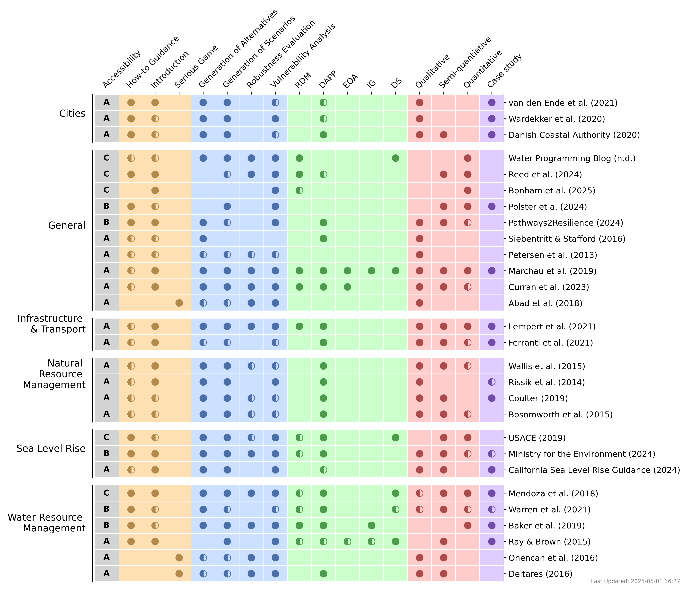

DMDU Tools & Resources Repository
Decision Making under Deep Uncertainty (DMDU) refers to a suite of methods that support decision-making in contexts where future conditions are highly uncertain and unpredictable. Unlike traditional decision-making approaches that rely on probabilistic forecasts, DMDU emphasizes robustness, flexibility, and adaptiveness - prioritizing strategies that can perform well across a wide range of plausible futures.
Over the past decade, the DMDU community has developed a rich landscape of methods including Robust Decision Making (RDM), Dynamic Adaptive Policy Pathways (DAPP), Info-Gap Theory (IG), Decision Scaling (DS), and Engineering Options Analysis (EOA). Despite this, uptake in real-world decision processes remains limited, in part due to fragmented access to practical tools and guidance materials.
This repository introduces the first community-driven catalogue of DMDU tools and resources, collected through a structured survey and expert input. It aims to provide researchers and practitioners with a centralized, living inventory of practical aids that support the design, implementation, and communication of DMDU strategies. Tools included here offer computational and modeling capabilities, while resources range from introductory materials to method-specific guides, serious games, and case study-based learning.
By offering a categorized, accessible collection of these materials, we hope to lower the entry barriers to DMDU adoption and foster broader, interdisciplinary application of these approaches.
How to Contribute
This catalogue is a living platform. We welcome contributions from the DMDU community! Whether you're a researcher, practitioner, or developer, you can help others by submitting your tools or resources to this repository.
To contribute, simply fill out the submission form linked below. We ask for general information about your contribution, such as its name, type (tool or resource), a brief description, and relevant thematic or methodological details. Submissions are reviewed for relevance and categorized using an established DMDU taxonomy.
The website is automatically updated once per hour based on new entries in the form. Contributions will appear in the summary figure and in the categorized tables below.
This initiative builds on the first community-wide effort to catalog DMDU tools and resources, which has been published as a paper here (link to paper). It provides an initial step toward enhancing accessibility, improving scalability, and facilitating the use of DMDU across sectors and geographies.
Submit a Tool or Resource
Submit via Google FormOverview Figure
Tools
Below is a list of tools submitted to the repository:
| Name | Description | Link |
|---|---|---|
| Example Tool | A tool for scenario discovery | Link |
Resources
Below is a list of supporting resources:
| Name | Description | Link |
|---|---|---|
| Example Resource | A dataset for DMDU testing | Link |